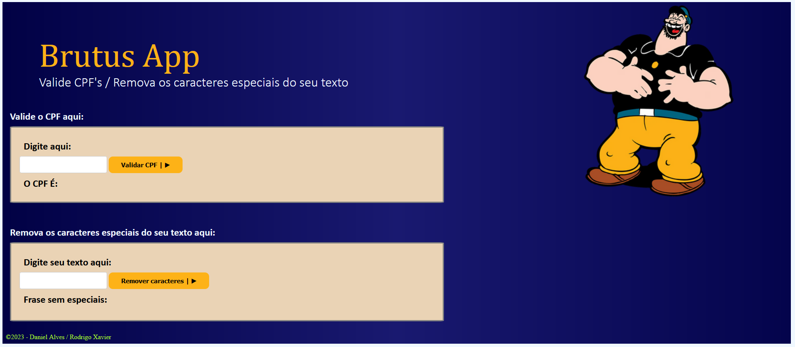

Pagina inicial Contato Sobre:
Explorando o Universo da Tecnologia | Em transi√ß√£o de carreira üöÄ
üíª Conhecimento em:
üåê Experi√™ncia Atual:
Cursos / Conhecimentos na área de tecnologia:
Observação do cenário
Projetos:

 SQL (Básico ao avançado)
SQL (Básico ao avançado) Lógica de programação em Python
Lógica de programação em Python